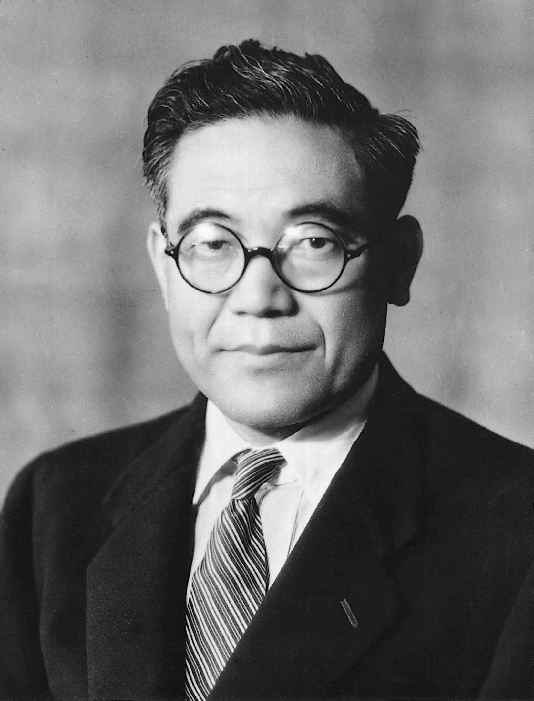

1894-1952
the ideal conditions for making things are created when machines, facilities, and people work together to add value without generating any waste.
Toyoda Kiichirō, June 11, 1894 – March 27, 1952) was a Japanese businessman and the son of Toyoda Loom Works founder Sakichi Toyoda. His decision to change Toyoda's focus from automatic loom manufacture into automobile manufacturing created what would become Toyota Motor Corporation.